Data Analyser ADVANCED
User guide for half-hourly energy data analysis
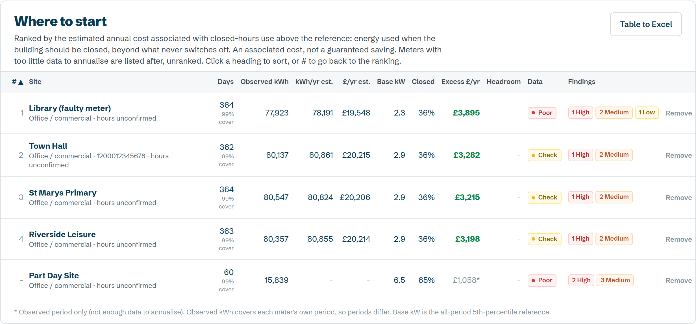
User guide for half-hourly energy data analysis

Read section 1. Then, before you send anything to a client, check three things on every site: the calendar is right and ticked as confirmed, the Data review tab has nothing left held back that matters, and the data quality verdict isn't Poor. Most wrong answers come from one of those.
There are two versions, built from the same engine, so the same file gives the same numbers in both. Standard (Ameresco-Data-Analyser-Standard.html, grey badge) is for quick screening: Overview, Data review, Calendar, Heatmap, Capacity, Charts and Settings, with findings and reports. Advanced (Ameresco-Data-Analyser-Advanced.html, green badge) adds Base load, Unusual days, Savings scenarios, the Opportunities and Estate comparison views, opportunity tracking, project files, the week-by-week explorer and the carbon panel. This guide covers Advanced; everything in Standard works the same way. The badge shows next to the name, on the customer password page and in every PDF footer.
Missing readings are no longer counted as zero. Annual figures are only shown with enough data. Calendars have per-day hours, overnight shifts, closures and exceptions. Findings carry separate impact and confidence and can be tracked as opportunities. New tabs for data review, base load, heatmap, unusual days, savings scenarios and capacity. Time-band tariffs, an optional carbon factor, estate comparison, and project files you can save and reopen. Expect some figures to differ from version 1, mainly where files had gaps.
Ameresco-Data-Analyser-Advanced.html. It opens in Chrome or Edge. Nothing installs and nothing goes online.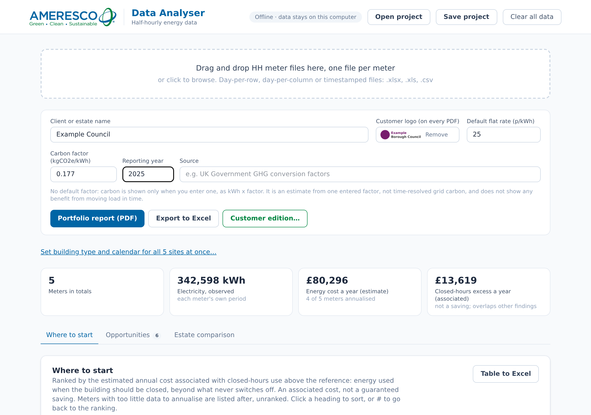
The Data Analyser turns half-hourly (HH) electricity data into an evidence-based list of where a site or estate uses energy when it shouldn't, priced at your rates, with a check on spare supply capacity. It handles one site or hundreds and produces Ameresco-branded PDFs and spreadsheets.
Nowhere. Closing the tab clears it; Clear all data does the same without closing. Project files, PDFs, spreadsheets and customer editions you export are ordinary files in Downloads, so look after them in line with the client's data agreement. Project files contain the half-hourly data and your internal notes.
Use current Chrome or Edge. The app is one file of about 2.3 MB and doesn't update itself; replace your copy when a new version comes out. The Standard and Advanced versions are separate files and can sit side by side. Project files record their format version, so a later version of the app can tell what it is reading.
.xlsx, .xlsm, .xls, .csv, .txt. Comma, semicolon or tab separated.| Layout | Looks like | Notes |
|---|---|---|
| Days down the side | A date, then 48 half-hourly readings. | Meter columns before the date are ignored. |
| Days across the top | One column per day, 48 rows down. | Turned round automatically. |
| 46 or 50 periods | Exports that follow clock changes. | Spring days have 46 readings, autumn days 50. Both handled exactly. |
| Timestamped | One row per reading: date-time and value. | 15-minute data is added up to half hours. Hourly data is refused. UTC timestamps are converted to UK time. |
A file with several meters stacked one after another (lots of conflicting repeated dates) is refused rather than spliced into one profile. Split it into one file per MPAN.
Each site's Data review tab shows what the app did with the file and lets you correct it. Nothing you do here changes the original file; it's all reversible.
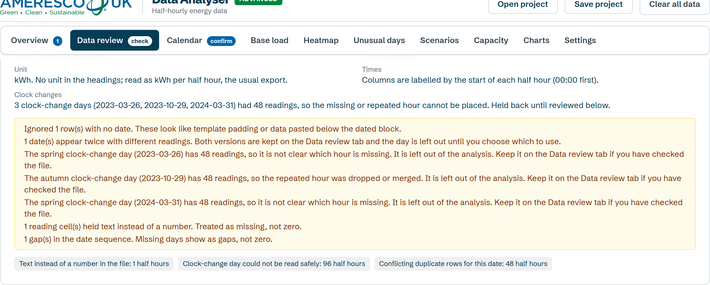
Clock-change days that couldn't be placed and dates with conflicting duplicate rows. For each, keep it (or pick the first or second row) or leave it out. Until you decide, it's left out.
Leave out readings you know are wrong: a meter fault, a period of works, estimated data. Give a date range, optionally a time window, and a reason. Excluded readings are left out of every figure, shown pink on the heatmap, and listed in the Excel and PDF appendix.
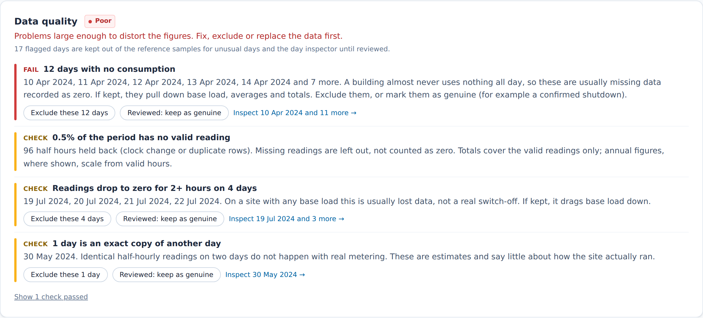
Every file is checked and given a verdict: Good, Check (usable, read the flagged items) or Poor (fix the data before quoting figures). Each check lists its dates with buttons to exclude them, mark them as fine, or inspect them.
| Check | What it looks for | Check / Fail |
|---|---|---|
| Coverage | Days' worth of valid readings. | Check under 330; Fail under 180 |
| Missing readings | Absent days, blank or text cells, held-back half hours. | Fail if over 10% of the period |
| Zero days | Whole days with (almost) no use: usually missing data recorded as zero. | Fail if over 3% of days |
| Dropouts | Exactly zero for 2 hours or more inside a normal day. | Fail if over 5% of days |
| Negative readings | On an import meter only. | Always Fail |
| Stuck readings | The same non-zero value for 6 hours or more (estimates). | Fail if over 10% of days |
| Copied days | A day identical to another. | Fail if over 5% of days |
| Spikes | Over 3× the 99.5th percentile and 5 kW above it. | Check only |
Flagged days not yet reviewed are kept out of reference samples (comparable days, unusual-day baselines), so one bad day can't distort the comparison.
The calendar says when the site is open, half hour by half hour. Every closed-hours figure depends on it, so it's the most important setting.
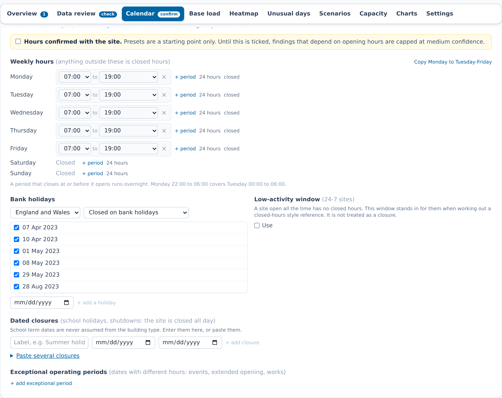
24/12/2025 - 02/01/2026 Christmas).The bulk setting on the main page replaces every site's weekly hours and holiday rules, and adds any closures entered there to each site's own.
A flat rate in p/kWh, fully delivered. Or switch to time bands: each band has days, a time window and a rate (e.g. weekday day, night, weekend). The app checks that every half hour has exactly one band; if not, it lists the problem and uses the flat rate until it's fixed. Bank holidays can be priced as Sundays. Fixed and capacity charges aren't included and the reports say so.
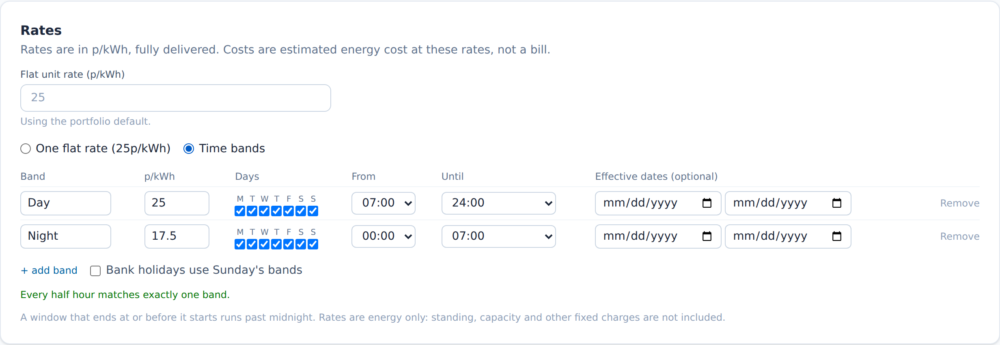
Enter a factor in kgCO2e/kWh, the reporting year and the source on the main page, or click one of the suggested UK Government factors to fill all three: 2026: 0.13096 and 2025: 0.177 kgCO2e/kWh (location-based Scope 2, generation only; transmission and distribution losses are a separate Scope 3 factor). Use the factor for the year you are reporting, and check it against gov.uk before formal reporting. Nothing is applied by default, so no carbon is shown until a factor is entered. It's kWh × one annual factor: it doesn't show any benefit from moving load in time.
| Setting | What it does |
|---|---|
| Annual estimates | Automatic: full at 330+ valid days, indicative from 180, off below. Force annualises short data with a warning on every figure. Off shows observed figures only. |
| Excess reference | Whether closed-hours excess is measured above the all-period reference (default) or the closed-hours reference (section 9). |
| Base percentile | Which percentile sets the base reference. Default 5th. |
| Unusual-day thresholds | Comparable days, minimum days, % and MAD thresholds, and the persistent-change rule (section 11). |
The main page shows estate totals (observed kWh over each meter's own period, annual cost for meters that can be annualised, submeters excluded), then three views.
Sites are ranked by the associated annual cost of closed-hours use above the reference: energy used when the building should be shut, beyond what never switches off. It's usually the cheapest thing to tackle, so it's a good first sort. Meters with too little data to annualise are listed after, unranked. Columns show valid days and coverage, observed kWh, annual kWh and cost (estimates), base kW, closed-hours share, the ranking figure, firm headroom, the data verdict and finding counts.
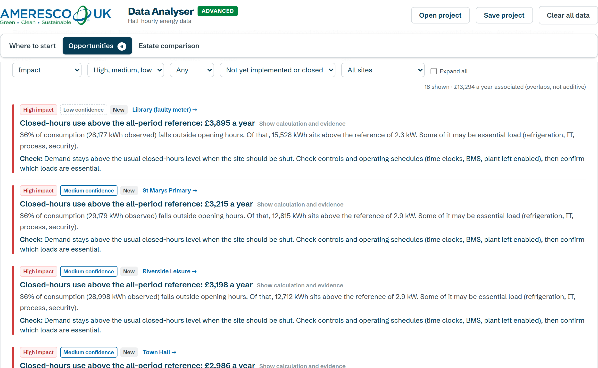
Use it as the action list for a client: sort by impact or confidence, filter to what's not yet done, and set statuses as you go (section 8). The total shown is not additive, because findings on one site overlap.
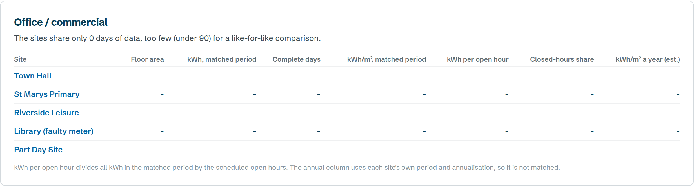
Raw consumption doesn't show which site is better run, so the comparison is fair or it isn't shown: same building type, at least 90 shared days, complete days only, and kWh/m² where floor areas are entered, plus kWh per scheduled open hour. Nothing is labelled best or worst. The sample sites cover different years, so they share no days, which is why the table above is empty.
Each site has ten tabs on a bar that stays pinned to the top of the window as you scroll, so you can always jump to another one. The active tab is filled blue; a small badge flags something to look at (high findings, a data check, a calendar to confirm, the number of unusual days or active scenarios).
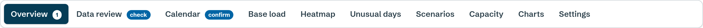
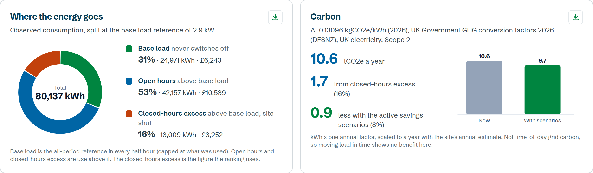
Where the energy goes splits observed consumption three ways, which add up to the total: base load (up to the reference in every half hour: what never switches off), open hours above it, and the closed-hours excess above it, which is the ranking figure. It also appears in the PDF appendix. The carbon panel shows tCO2e at the entered factor, the share from closed-hours excess and what the active savings scenarios would remove. Every chart has a download button (green arrow) that saves it as a picture for proposals.
A site's Overview tab shows its key figures (each tagged Measured or Estimate), its top three investigations and all findings.
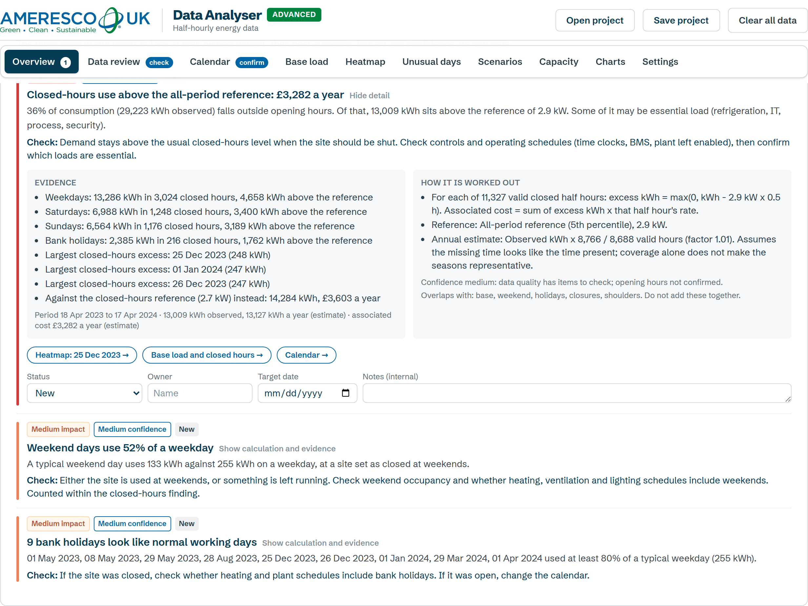
There's no combined score. The top three are the highest impact, then the best evidence.
Each finding is an opportunity record with a status (New, Under review, Site visit required, Confirmed, Action agreed, Implemented, Closed), an owner, a date and notes. These save with the project. Customer editions show status but leave out owner and notes unless you choose to include them.
| Finding | When it appears | Level |
|---|---|---|
| Closed-hours use above the reference | Any site with closed hours. Closed-hours energy above the reference, priced. | By cost |
| Load that never switches off | Always. Base reference, its share and cost. Each 1 kW is 8,766 kWh a year. | Medium if half or more of use at a site that closes |
| Weekend running | Site closed at weekends, but a typical weekend day uses 50%+ of a weekday. | High at 70%+ |
| Bank holidays like working days | A holiday uses 80%+ of a typical weekday at a site closed on them. | Medium |
| Closures running | Weekdays in a dated closure use 60%+ of a normal weekday. | Medium |
| Early starts, late stops | Closed-hours excess in the two hours either side of opening. | By cost |
| Base load change | Base up or down 15%+ on the same months a year earlier (needs about 14 months). | By cost if up |
| Unusual days | Days far from their matched baseline (section 11). | Low |
| Persistent change | A sustained step up or down (section 11). | Medium if up |
| Supply capacity | Peak at 90%+ of capacity, or 50% or less. | High at 90%+ |
They're associated costs at the rates entered, not savings, and they overlap (weekend running is inside the closed-hours figure), so don't add them. For a what-if, use Savings scenarios, which don't double count.
The app shows two references and says which one each figure uses.
Closed-hours excess for each valid closed half hour is max(0, kWh − reference kW × 0.5 h), priced at that half hour's rate, summed, then scaled to a year if the site is annualised.
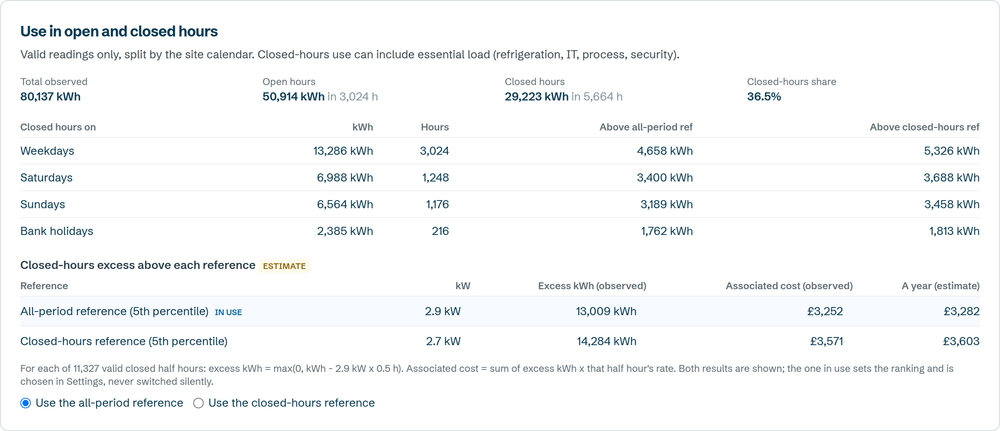
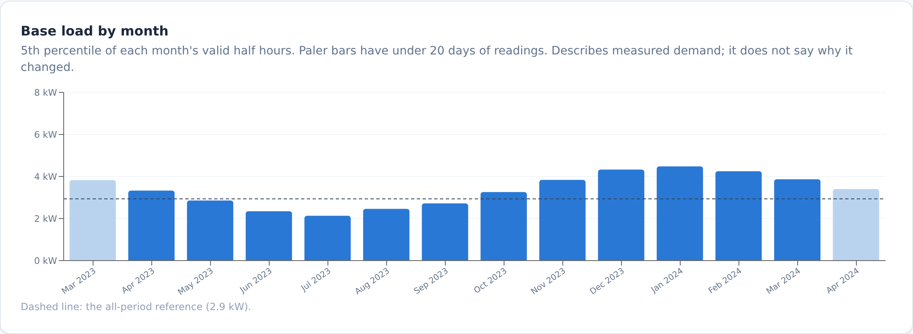
Use it when you know something changed on site on a date: a new BMS or time-clock schedule, plant switched off, an LED or controls upgrade. Enter the date and a window (2 to 12 weeks, 8 by default). The app compares the weeks before with the same number of weeks after: average demand, base load and average demand when closed. It then says in one line what moved and what it would be worth over a year at the site's average rate if it held.
Keep the window short so the seasons don't swamp the answer: a change made in November will look like a rise just because winter started. It shows what changed in the meter data, not why.
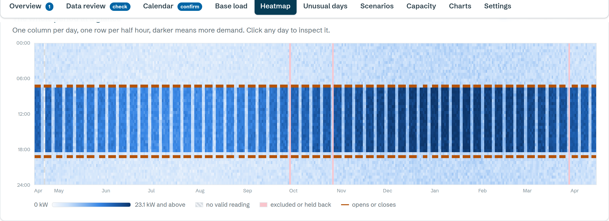
The fastest way to read a site. Look for dark bands outside the orange marks, weekends that look like weekdays, holidays that don't show, step changes and gaps. Hover for the reading; click a day to inspect it.
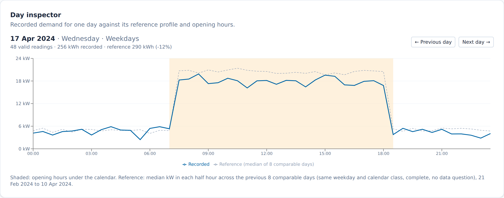
The reference profile is the median kW in each half hour across the previous 8 comparable days (same weekday and calendar class, complete, no unresolved data question). The number of days and their range are shown. Below it, the week view shows seven days as a grid.
Answers "is the site using more or less than before?". Pick a period (quick picks: last 4 weeks, 3 months, 6 months) and the app compares it with the period just before it and with the same weeks a year earlier, in one sentence each. Use it to show a customer how a recent month compares, to check that savings are holding, or to spot a site creeping up. The year-earlier comparison is the fairer one because it is the same season. Only days complete in both periods are counted; if too few match, it says so rather than guess.
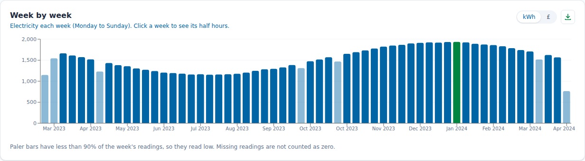
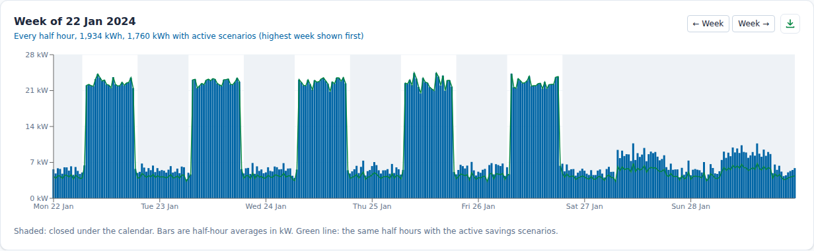
Below the heatmap, a bar per week (kWh or £). Click any bar to see that week half hour by half hour, with closed hours shaded, the result of active savings scenarios, and, when time bands are set, the unit rate in each half hour underneath. It opens on the highest week.
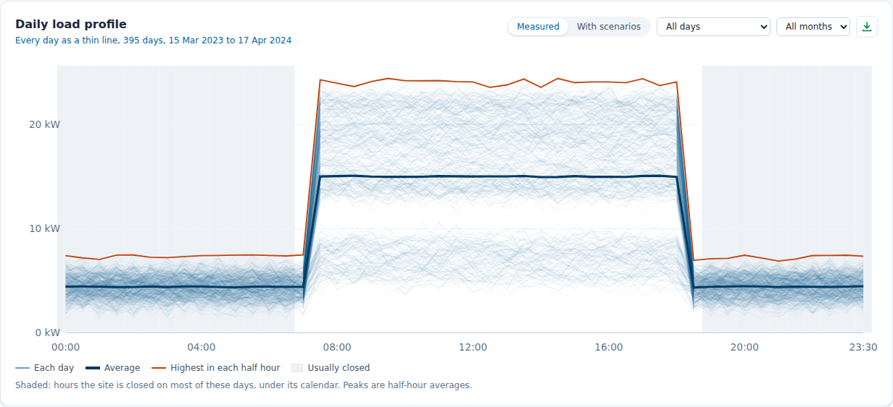
The quickest way to see how consistent a site is: where the lines bunch, the site behaves the same every day; a second band means a different kind of day (here, weekends); stray lines are one-offs. Filter by days (all, open, closed, weekdays, weekends) and month. In Advanced, switch to With scenarios to see the effect of the active savings scenarios against the measured average.
The Charts tab keeps the earlier analyser charts (day-of-week profile, load duration curve, day and night by month, week comparison, every reading). Its date filter affects those charts only; findings always use the full record.
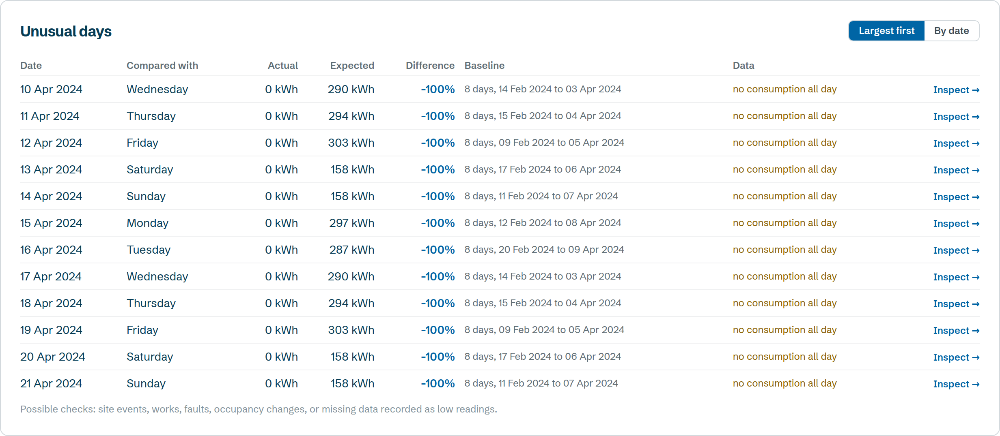
Each day is compared with the previous 8 comparable days: same actual weekday and the same calendar class (so a bank holiday Monday is compared with bank holidays, not Mondays). At least 6 are needed; days without enough are counted as cannot apply. Days with unresolved data problems are kept out of the baseline.
A day is flagged when it's more than 25% from the baseline median and more than 4 × the scaled median absolute deviation. High and low days are both flagged. A low day is not a saving until the data and an operational change are confirmed.
A sustained shift rather than a one-off: demand at least 15% above or below its baseline on 5 of 7 consecutive eligible days. Reported once with the date it started.
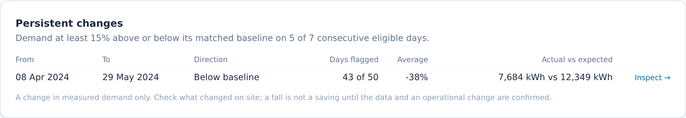
All these thresholds can be changed in the site's Settings.
What-if estimates applied to one copy of the half-hourly data, in the order listed. Each scenario works on what earlier ones left, so nothing is counted twice, and no half hour goes below its retained floor or below zero. Every input starts at zero.
| Scenario | What it does |
|---|---|
| A. Reduce closed-hours excess | Removes a share of demand above the reference in every closed half hour. The reference (the load that never switches off) stays, so even 100% leaves that level running overnight and at weekends. Add B to test cutting it. |
| B. Reduce base load in chosen hours | Removes a fixed kW in a time window on chosen days, never below the floor. |
| C. Remove early-start or late-stop demand | Removes a share of demand above a floor in windows around opening and closing. |
| D. Lower peak demand | Usually Hold demand at or below a target kW: every half hour above it is brought down to it. One click sets the target to 90%, 80% or 70% of the current peak, and the result shows how many half hours on how many days that touches. You can also trim the N highest half hours or every half hour above a level. Remove takes the energy away; shift moves it to a chosen window the same day. Expect a small energy saving: the value of lower peaks is in capacity and peak-time network charges (not priced here) and electrification headroom. |
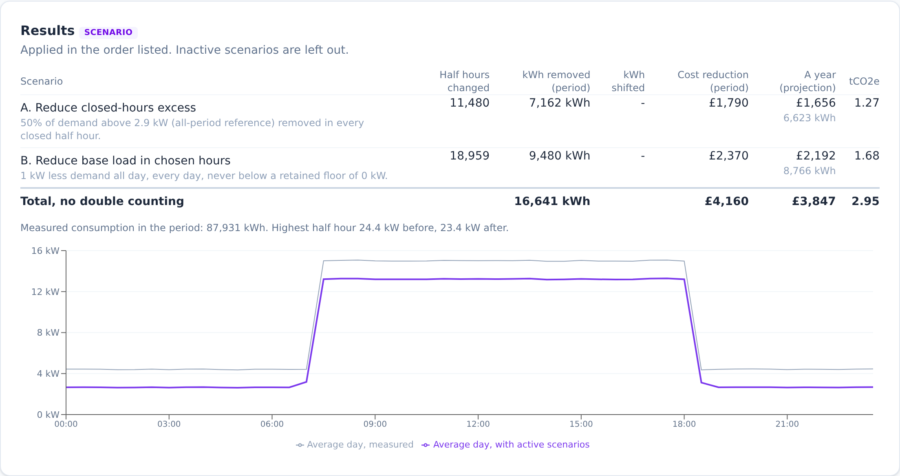
The chart shows the average day before and after. Switch between all days, days the site opens and closed days (weekends, holidays, closures). "All days" mixes the two, so daytime still shows working-day use even when closed-hours demand is cut; "closed days" shows scenario A clearly, with demand brought down to the dashed reference line.
10 kW removed for 12 hours a day on 100 days is 12,000 kWh. At 25p/kWh that's £3,000. The app is tested against this.
Scenarios save with the project and appear in the Excel export (with an interval sheet for internal use) and the PDF appendix. Customer editions show them read-only.
Enter the agreed supply capacity (kVA), power factor and safety margin on the Capacity tab.
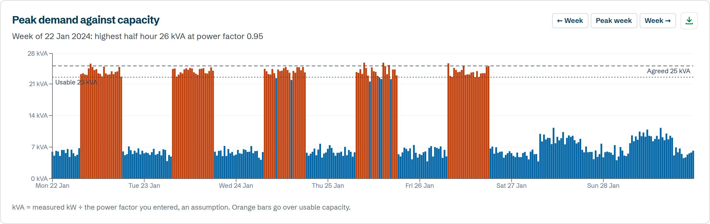
The chart opens on the week of the highest half hour; step through weeks with the arrows. Then the ten highest half hours, one per day:
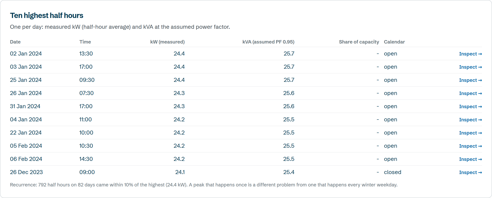
"No exceedance" means none in the analysed half hours under the entered assumptions. A colder year, load on other meters or DNO constraints can change the answer. It's a screen before a capacity conversation, not a substitute.
Save project writes one .adproject file with the raw readings, data review decisions, calendars, rates, statuses, notes, scenarios, client name, logo and carbon factor. Open project brings it all back. Use it to pick work up later or hand it to a colleague. It holds client data and internal notes, so treat it like the source files.
| Output | What's in it | Audience |
|---|---|---|
| Site summary (PDF) | One page per site, plus an appendix: top three, every finding with its calculation, data review, calendar and tariff. | Client-ready |
| Download all charts (PDF) | Full site report with every chart and table, plus the appendix. | Client-ready |
| Charts as separate PDFs (zip) | The same, one PDF per chart. | Client-ready |
| Portfolio report (PDF) | Ranked table, estate opportunities, then a page per site. | Client-ready |
| Table to Excel | The Where to start table in the order shown. | Internal or client |
| Export to Excel | Summary, Opportunities, Scenarios, Scenario intervals, Data review, Calendar and tariff, and a sheet per site with the half-hourly readings (missing left blank, with a flag column). | Internal (raw data and notes) |
| Customer edition | A locked dashboard for one client (section 15). | Client |
Internal notes and owners appear only in internal exports. Set the client name and logo before exporting.
A single HTML file holding one client's sites, locked with a password. The client explores their data, adjusts the things they know better than we do, and downloads their own reports.
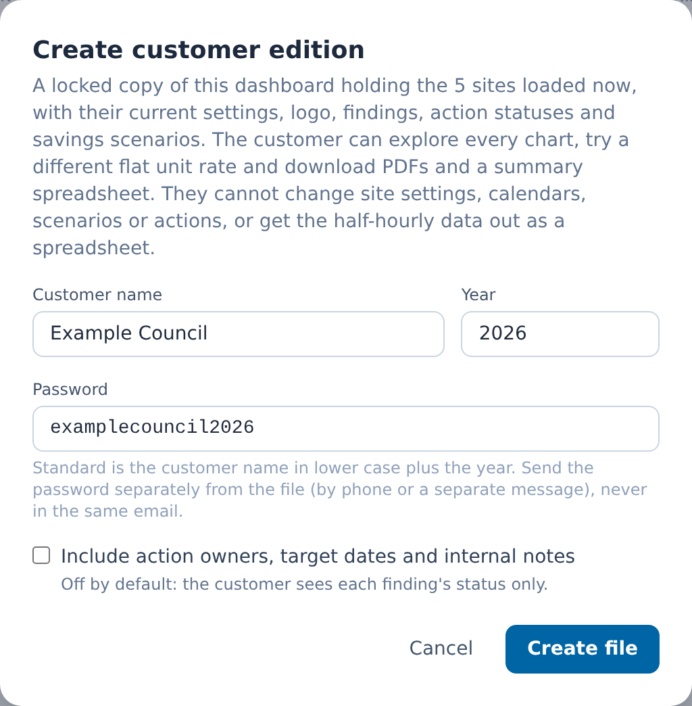
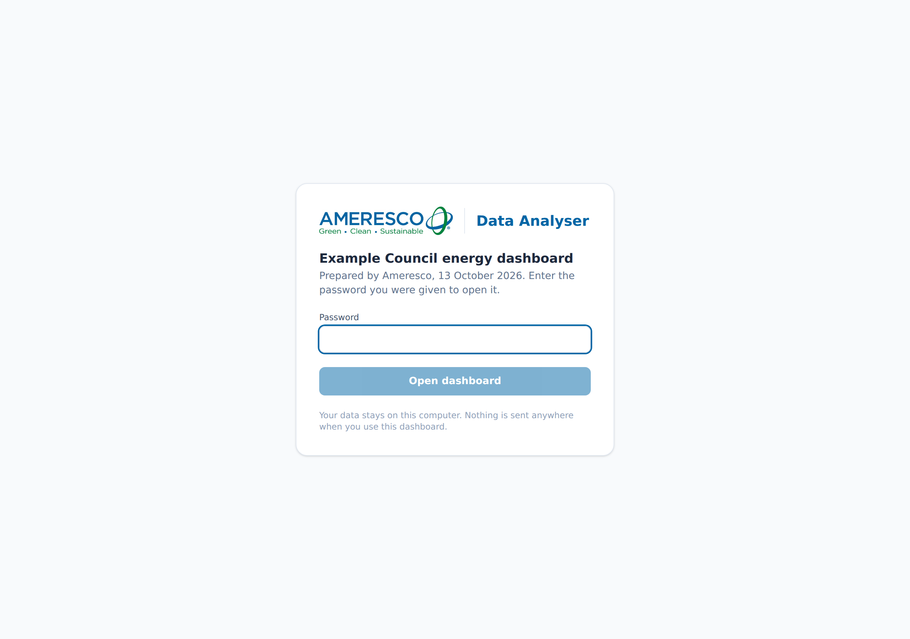
It's the customer name in lower case, letters and digits only, then the year (e.g. examplecouncil2026). For anything sensitive, add a random part and keep a note of it.
| The client can | The client can't |
|---|---|
| Explore every tab, chart and table, and see statuses | Add or remove sites |
| Change opening hours, closures, holidays and confirm the calendar | Change opportunity statuses, owners or notes |
| Change rates (flat or time bands), carbon factor, site name, type and floor area | Change how the file was read, meter grouping or the analysis method |
| Set supply capacity and test loads; exclude readings they know are wrong; build savings scenarios | See owners or internal notes (unless you included them) |
| Download PDFs and a summary spreadsheet; save their changes as a new copy | Export the half-hourly readings |
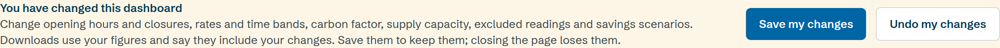
Encrypted with AES-256-GCM, key from the password (PBKDF2-SHA-256, 310,000 rounds). An edition is a snapshot: it can't be updated or withdrawn once sent, and a forgotten password can't be recovered.
| Figure | How it's worked out |
|---|---|
| Demand (kW) | kWh in the half hour ÷ 0.5 h. A half-hour average. |
| Valid reading | A number, not excluded, not held back. Blank, text and absent readings are missing, never zero. |
| Observed kWh and cost | Sum of valid readings, each priced at its own half hour's rate. |
| Annualisation | Observed × 8,766 ÷ valid hours. Full at 330+ valid days, indicative from 180, off below 180 unless forced. |
| All-period reference | 5th percentile (setting) of all valid half-hour kW. |
| Closed-hours reference | 5th percentile of valid closed half-hour kW (low-activity window at 24-7 sites). |
| Closed-hours excess | Σ max(0, kWh − reference kW × 0.5) over valid closed half hours, × rate. |
| Base load cost | Reference kW × 0.5 h × each valid half hour's rate, summed. |
| Complete day | At least 90% of its half hours valid. Day comparisons use complete days only. |
| Impact | £ ÷ site energy cost: 10%+ High, 4%+ Medium, below Low. |
| Weekend, holidays, closures | Median complete weekend day ÷ median weekday (50%, High 70%); holidays at 80%+; closure weekdays at 60%+. |
| Base load change | Monthly 5th percentile (months with 20+ days), paired a year apart; reported at ±15%. Cost = kW change × 8,766 × average rate. |
| Reference profile | Median kW per half hour over the previous 8 comparable complete days. |
| Unusual day | Baseline = previous 8 comparable days (minimum 6). Flagged if |difference| > 25% and > 4 × 1.4826 × MAD. |
| Persistent change | ≥15% from baseline on 5 of 7 consecutive eligible days. |
| Peak kVA, firm headroom | kW ÷ power factor. (Capacity × (1 − margin) − peak kVA) × power factor. |
| Carbon | kWh × entered factor. No default. |
| Estate comparison | Same type, shared complete days (90+), kWh/m² and kWh per scheduled open hour over those days. |
The core maths is tested against the Python version of the analysis on reference files, and the brief's acceptance checks run as automated tests.
| Problem | What to do |
|---|---|
| File refused: several meters stacked | Split it into one file per MPAN. |
| Hourly data refused | The tool needs half-hourly (or 15-minute) data. Ask the supplier for HH. |
| "Already loaded" | The same file is already a site. Use the existing one. |
| Days missing from the analysis | Look at Held back for review on the Data review tab: clock-change days and conflicting duplicates wait for your decision. |
| No annual figures | Under 180 valid days. Use the observed figures, or force annualisation in Settings and accept the warning. |
| Everything is Medium confidence | Confirm the calendar, and resolve the data quality Check items. |
| Closed-hours figure far too high | Check the calendar. A 24-7 site set as an office will show most of its use as closed hours. |
| Time bands ignored | Read the validation message: a gap or overlap makes the app fall back to the flat rate. |
| Customer edition won't open | Check the password. Save the file and open it in Chrome or Edge, not an email preview. |
Send them to the app owner with the file that caused the problem (or a description if it's confidential), what you expected and what you saw. A saved project file is the easiest way to show the problem.